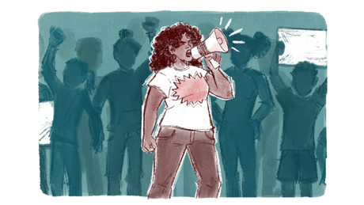

Estado e políticas públicas
Outros conceitos, estes mais conhecidos e debatidos, são os de Estado, políticas públicas e políticas sociais.
O termo “Estado” (com “E” maiúsculo) é considerado um conceito central da teoria política, com múltiplos significados, relacionados aos contextos históricos. Para pensar uma educação emancipadora, precisamos ver o Estado não como um resultado de um acordo social – que fundamenta um ente neutro destinado a atender aos interesses de todos os grupos de uma sociedade –, como se o poder fosse compartilhado por todos. Ao contrário, é preciso entender o Estado como um produto da assimetria do poder econômico e político na sociedade, o que o faz expressar os interesses dos setores dominantes, ou seja, de manter a ordem social como ela é, com soberanos e subalternos. Isso é obtido, em primeiro lugar, por instrumentos de coerção tal como aparatos policiais e jurídicos.
Todavia, o Estado não é apenas um instrumento de opressão: ele também possui estruturas para conformar a cultura e a ideologia, de modo a obter o consentimento dos grupos subalternos. Assim, equilibrando coerção e consenso, é construída a hegemonia, que é o controle dos grupos sociais dominantes sobre o Estado e a sociedade.
Entretanto, a hegemonia não é estática, processos sociais dinâmicos podem alterá-la e, nessa perspectiva, o Estado é também um espaço de luta no qual diferentes grupos sociais competem por mais influência e mais poder.
Outra questão importante é que não existem apenas as estruturas formais de poder (Estado político), existe e subsiste a sociedade civil, espaço com relativa autonomia, que surge das relações econômicas, sociais e culturais. Ela comporta diversos tipos de atividades, formas e níveis de organização: o sistema escolar, as igrejas, os sindicatos, os partidos políticos, as organizações profissionais, a organização material da cultura (jornais, revistas, editoras, televisão, internet, dentre outros). A luta pela hegemonia ocorre tanto no Estado político quanto na sociedade civil, onde as classes subalternas resistem e contestam a opressão. Como foi afirmado anteriormente, a educação, a cultura e a organização social são essenciais para a construção não somente da hegemonia, mas também da contra-hegemonia, para que esta possa desafiar os processos de dominação.
Nesta perspectiva, as políticas públicas e seu subconjunto (as políticas públicas sociais) podem ser compreendidas como algo mais que um conjunto de atividades (programas, projetos, iniciativas) das diferentes esferas governamentais (federal, estadual e municipal), de caráter econômico, tributário e social, voltadas para a resolução de problemas específicos e para atender às necessidades de setores da sociedade, melhorando a qualidade de vida.
Muito mais que isso, as políticas públicas são a expressão concreta da luta pela hegemonia, na qual os direitos e as demandas dos diversos setores competem tanto pela prioridade da alocação de recursos públicos (para a sua execução) quanto para que sejam (re)produzidos conteúdos e valores vinculados à sua ideologia e cultura. Em outras palavras, é a luta por direitos sociais que obriga o Estado a implementar as políticas públicas sociais decorrentes.

Título: Luta pela hegemonia
Fonte: Prosa (2024f).